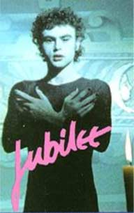

| Kalender 2002 Maj Juni Juli August September Oktober November December Kalender 2003 Januar Februar Marts |
Fester
Bio |
| Maj | dunst Kalender 2002 |
| Lør. 01 | |
| Søn. 02 | |
| Man. 03 | mandags klip fra 15-18 (Christian) kom og bliv klippet |
| Tirs. 04 | |
| Ons. 05 | 16-20 åbent (Jacob Nicu) |
| Tors. 06 | |
| Fre. 07 | 16-20 åbent (Jacob Nicu) |
| Lør. 08 | |
| Søn. 09 | |
| Man. 10 | mandags klip fra 15-18 (Christian) kom og bliv klippet |
| Tirs. 11 | |
| Ons. 12 | Kl. 19:00 Film ( The Birdcage ) |
| Tors. 13 | |
| Fre. 14 | 16-20 åbent (Jacob Nicu) |
| Lør. 15 | |
| Søn. 16 | |
| Man. 17 | mandags klip fra 15-18 (Christian) kom og bliv klippet |
| Tirs. 18 | |
| Ons. 19 | 16-20 åbent (Jacob Nicu) |
| Tors. 20 | |
| Fre. 21 | 16-20 åbent (Jacob Nicu) |
| Lør. 22 | |
| Søn. 23 | |
| Man. 24 | mandags klip fra 15-18 (Christian) kom og bliv klippet |
| Tirs. 25 | |
| Ons. 26 | Kl. 19:00 Film  Jubilee (1977)Directed by Derek Jarman. Adam Ant's debut. Kyokon densetsu: utsukushiki nazo (1983) (Beautiful Mystery International: English title) Directed by Genji Nakamura Japans første officielle Homofilm. Se samurai krigerne i træningslejeren - og i sovesalen ! Hilsen Jørgen og Anders |
| Tors. 27 | |
| Fre. 28 | 16-20 åbent (Jacob Nicu) |